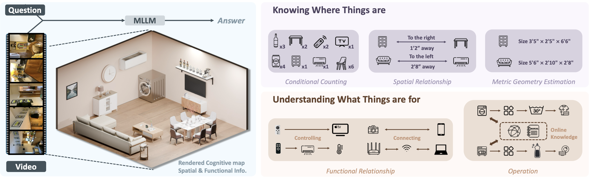
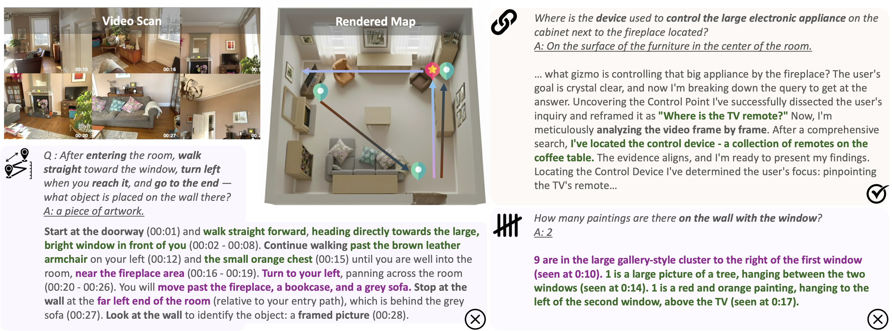

CVPR 2026
From Where Things Are
to What They Are For
Benchmarking Spatial–Functional Intelligence in Multimodal LLMs
1
2
3
Benchmarking Spatial–Functional Intelligence in Multimodal LLMs

Left: A video is provided as input; the model reasons across frames over spatial and temporal context. Right: Two complementary reasoning abilities — Structured Spatial Reasoning and Functional Reasoning.
Human-level agentic intelligence extends beyond low-level geometric perception, evolving from recognizing where things are to understanding what they are for. While existing benchmarks effectively evaluate the geometric perception capabilities of multimodal large language models (MLLMs), they fall short of probing the higher-order cognitive abilities required for grounded intelligence. We introduce the Spatial–Functional Intelligence Benchmark (SFI-Bench), a video-based benchmark with over 1,500 expert-annotated questions derived from diverse egocentric indoor video scans. SFI-Bench systematically evaluates two complementary dimensions: (1) Structured Spatial Reasoning, which requires understanding complex layouts and forming coherent spatial representations, and (2) Functional Reasoning, which involves inferring object affordances and their context-dependent utility. Our experiments reveal that current MLLMs consistently struggle to combine spatial memory with functional reasoning and external knowledge, highlighting a critical bottleneck in achieving grounded intelligence.
Task distribution (left) and video duration histogram (right).
SFI-Bench evaluates two complementary dimensions: Structured Spatial Reasoning (understanding where things are) and Functional Reasoning (understanding what they are for). Select a task below to see its description and a live example.
25 models evaluated across proprietary, open-source instruct, and reasoning categories. Gemini-3.1-Pro achieves 73.8% overall; counting remains the hardest task. Submit Your Results
| Methods | Rank | Avg. | GCT. | MPR. | LI. | FA. | OP. | TS. |
|---|
Figure 2. Top models across 6 tasks (left). Tool-augmented vs standard inference for GPT-5 (right).
Spatial and layout understanding can be improved with effective reasoning. However, external tools may introduce noise that degrades performance for weaker models. Open-source models trained with RLVR fail to transfer reasoning from mathematical domains to spatial–functional tasks.
We investigate how modern MLLMs construct and utilize cognitive spatial maps, examining reasoning traces and systematic failure patterns.
Left: Error distribution across four tasks — colors indicate Visual Perception (navy), Functional Reasoning (amber), and Spatial Understanding (teal). Right: Reasoning compactness vs accuracy — larger models produce shorter, more effective chains.

Human-annotated analysis of MLLM reasoning chains. Red arrows — ground-truth path; blue arrows — model's inferred path. Experts annotate errors by projecting reasoning steps onto the spatial layout.
As tasks become more cognition-intensive, errors shift from perception to reasoning and spatial–functional grounding. Models fail to maintain consistent spatial localization, exhibiting discontinuous spatial memory and hallucinated transitions.
Longer reasoning does not correlate with higher accuracy. Incorrect answers exhibit 1.12–1.41× longer chains, suggesting semantic drift rather than deeper inference.
Effective reasoning is not about producing longer explanations but about maintaining alignment with perceptual evidence. Concise, grounded, semantically coherent reasoning yields the most reliable improvements across tasks and model scales.
Does temporal order matter? Can text replace vision? We probe two fundamental questions about cognitive map construction.
GPT-5 under progressive frame-order shuffling. Performance stays largely stable — MLLMs rely on aggregated visual evidence rather than temporal coherence.
| Shuffle | Overall | Count | Layout | Spatial | Func. |
|---|---|---|---|---|---|
| 0% | 75.5 | 60.0 | 88.0 | 82.0 | 72.0 |
| 25% | 75.5 | 62.0 | 88.0 | 80.0 | 72.0 |
| 50% | 71.5 | 50.0 | 84.0 | 80.0 | 72.0 |
| 75% | 68.5 | 50.0 | 78.0 | 76.0 | 70.0 |
| 100% | 75.0 | 58.0 | 86.0 | 78.0 | 78.0 |
GPT-5 under full video vs. caption-only input. Even detailed model-generated captions are insufficient for spatial map construction.
| Input | Count | Layout | Spatial | Func. |
|---|---|---|---|---|
| Visual | 58.4 | 83.0 | 81.5 | 75.3 |
| Caption | 57.2 | 51.6 | 55.4 | 67.6 |
Conditional counting persists as the hardest task, requiring compositional logical reasoning over distributed visual evidence.
Beyond ~1.5k tokens, overthinking introduces semantic drift and degrades performance rather than improving it.
Cognitive maps depend on direct visual grounding. Models show surprising insensitivity to temporal order but large drops with text-only input.
Web search outperforms offline by 20+ points on functional tasks — but only when reasoning capacity is sufficient to filter noise.
As tasks grow more cognitive, failures shift from visual perception to spatial grounding and functional reasoning.
RLVR-trained reasoning models show minimal gains, failing to transfer from mathematical domains to spatial–functional tasks.
@article{zhang2025sfibench,
title = {From Where Things Are to What They Are For:
Benchmarking Spatial-Functional Intelligence
in Multimodal LLMs},
author = {Zhang, Le and Yang, Jihan and Krishnan, Soundarya
and Majmudar, Jimit and Ge, Xiou and Puri, Prasoon
and Saraf, Prathamesh and Bhargava, Shruti
and Piraviperumal, Dhivya and Ling, Yinan
and Pan, Cindy and Yu, Hong
and Agrawal, Aishwarya and Tseng, Bo-Hsiang},
journal = {arXiv preprint},
year = {2025}
}